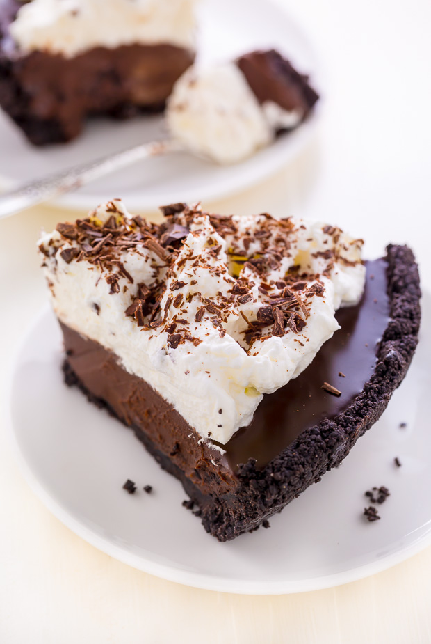

No Bake Dark Chocolate Cream Pie

Pure Bliss Without the Bake!
Indulge in the rich, velvety decadence of this no-bake dark chocolate cream pie! With its smooth, luscious filling nestled in a crispy cookie crust, this pie is a chocoholic’s dream come true. Perfect for those moments when you crave something sweet but don’t want to turn on the oven, each bite offers pure bliss. Top with a sprinkle of chocolate shavings for an extra touch of elegance! 🍫✨🥧
Ingredients:
- ½ cup white sugar
- 2 tablespoons cornstarch
- 1 (.25 ounce) package unflavored gelatin
- ¼ teaspoon salt
- 2 cups whole milk
- 4 egg yolks
- 1 teaspoon vanilla extract
- 6 ounces semisweet chocolate, chopped
- 1 (9 inch) prepared graham cracker crust
Topping (Optional)
- 1 cup heavy whipping cream
- 2 tablespoons white sugar
- 1 teaspoon vanilla extract
Steps:
- Combine sugar, cornstarch, gelatin, and salt in a medium saucepan. Stir in milk. Cook over medium heat, stirring constantly, until thickened, 7 to 10 minutes. Reduce heat to low.
- Beat eggs yolks and vanilla extract in a bowl. Slowly whisk in a small amount of the hot milk mixture. Slowly pour mixture back into the pan, whisking constantly. Cook and stir over low heat until custard is very thick, about 2 minutes. Do not let boil. Remove from heat.
- Stir in chocolate until melted. Pour into the prepared graham cracker crust and chill for 2 hours.
- Combine heavy cream, sugar, and vanilla extract in a bowl. Beat using an electric mixer on medium speed until soft peaks form. Pipe onto the chilled pie.
Check out these other tasty recipes!